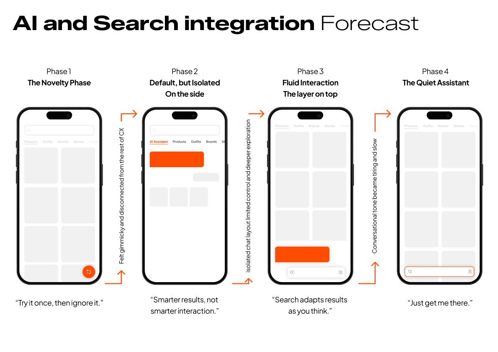
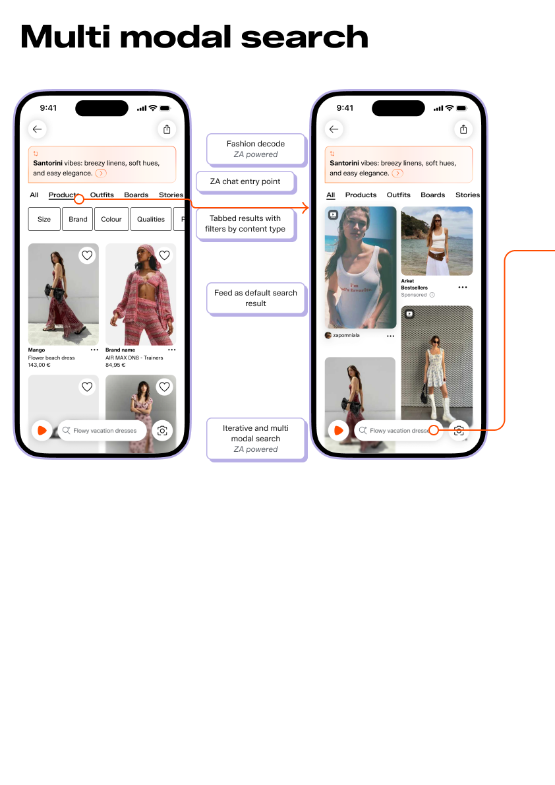
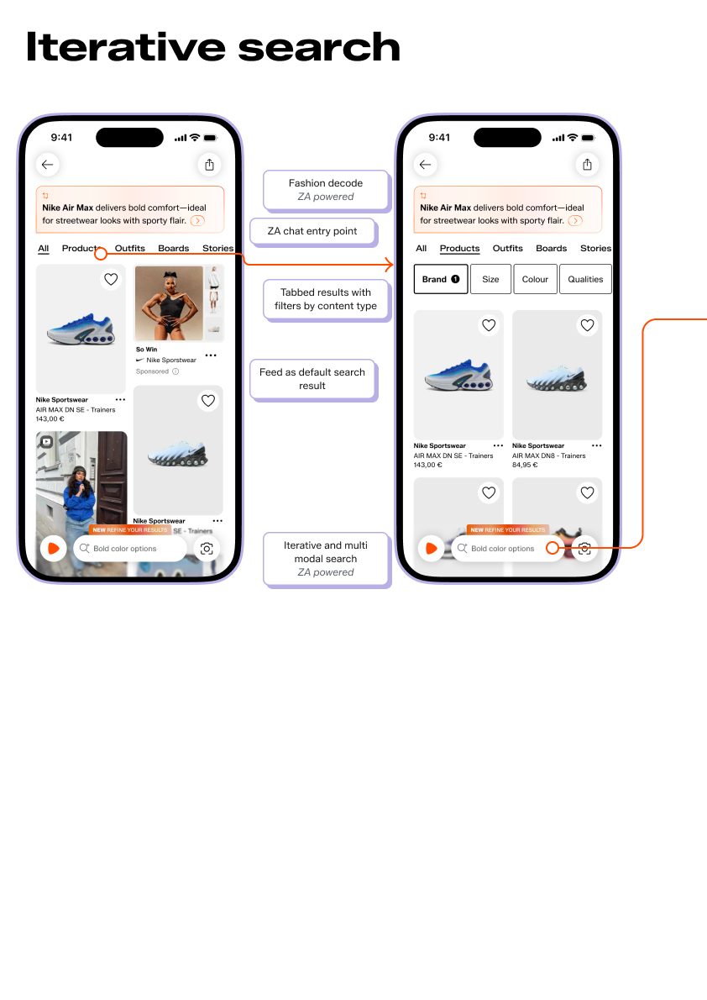
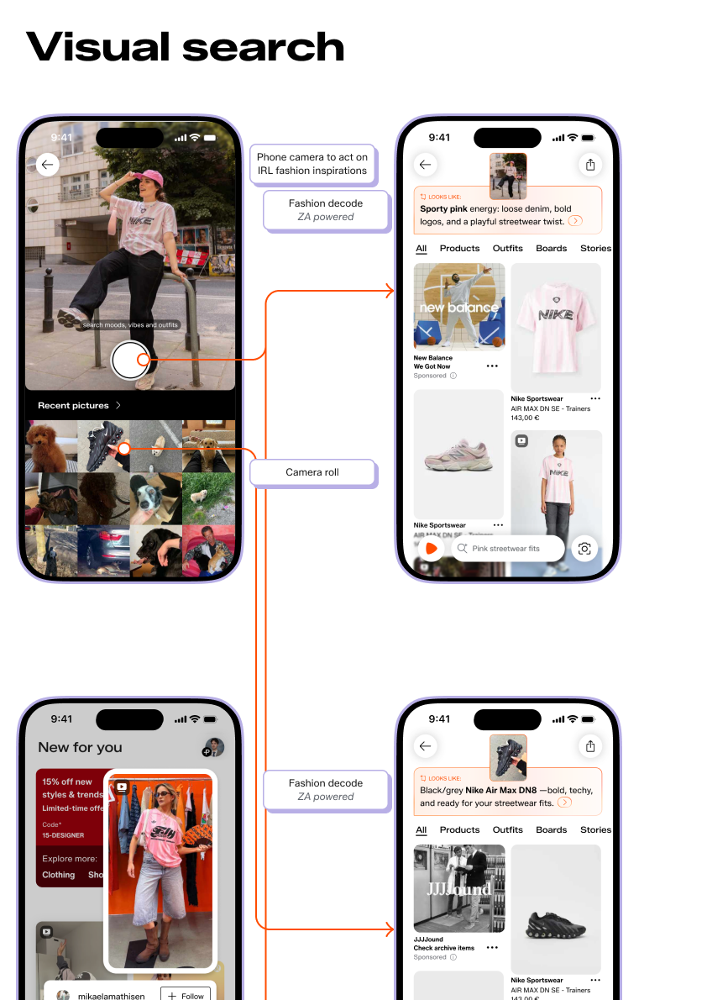
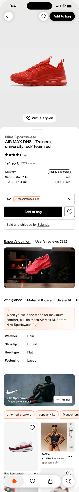
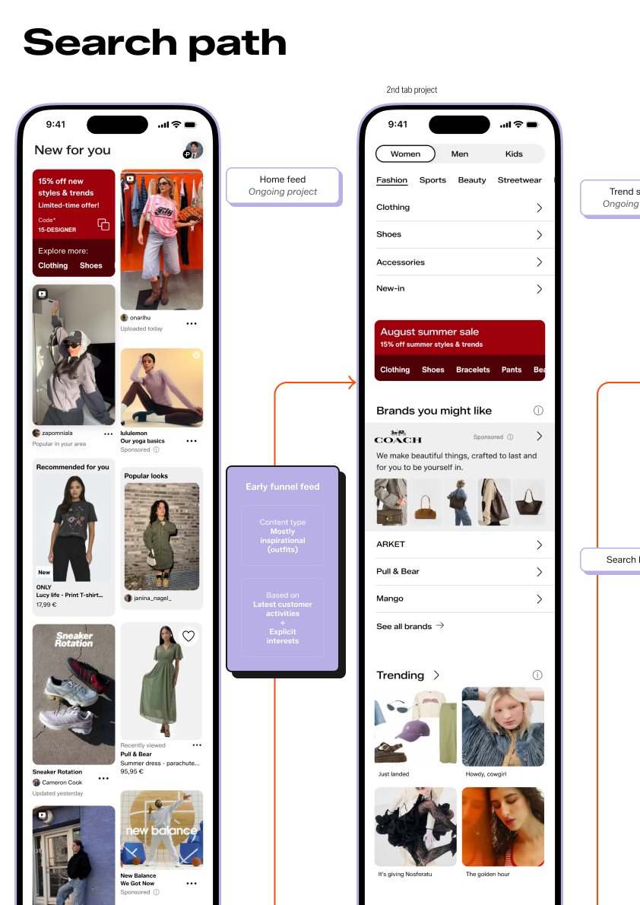
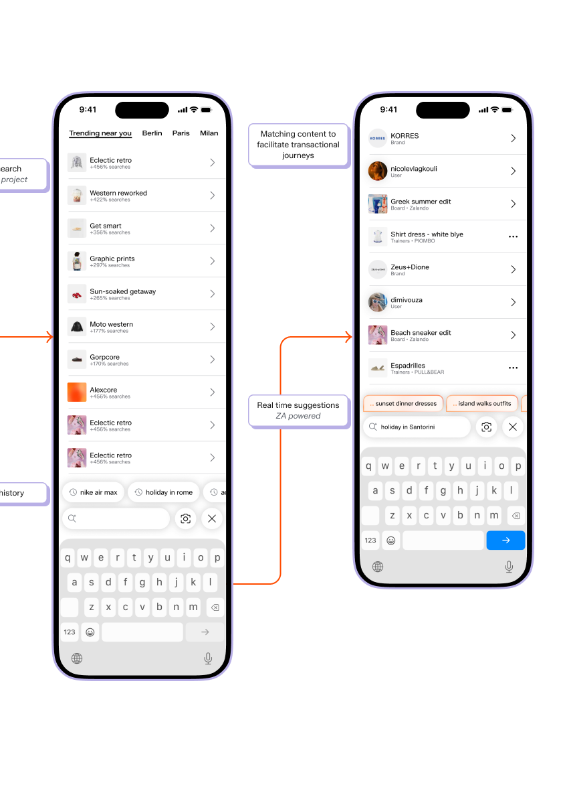
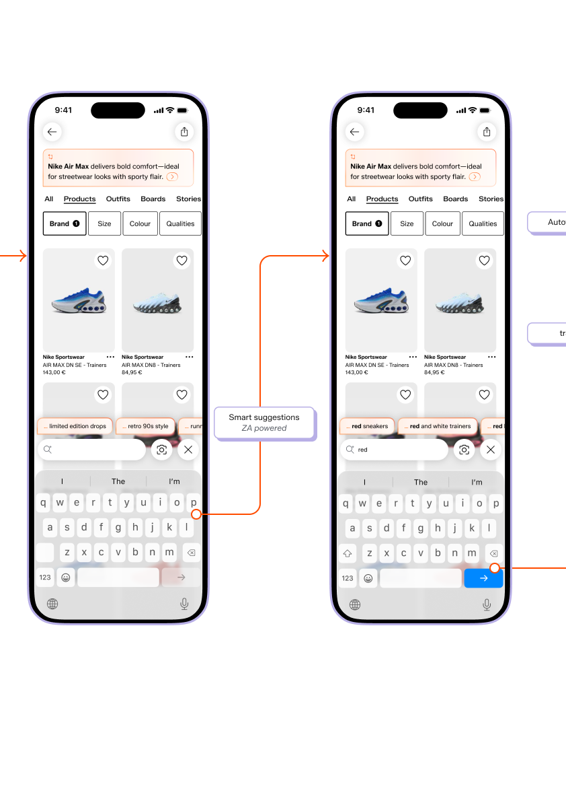

A unified AI-native discovery vision for Zalando — from cross-team synthesis to Co-Founder presentation.

The problem
Zalando's discovery experience was split across three disconnected surfaces — Feed, Search, and the 2nd Tab — each owned by a different team with a different design language and a different idea of where Zalando was going. As the platform moved toward social commerce, AI was being bolted on as a separate tab rather than woven into how people actually shop.
The problem sat above any single team's roadmap. Nobody had been asked to solve it at the vision level. I asked to.
How I approached it
Ran a listening tour across Feed, Search, ZA/AI, the Shenzhen team, and IDEO. Found five competing visions for the same problem. Wrote three unifying principles that everyone could build toward.
Spent a month embedded with the Zalando Shenzhen team and IDEO — not a video call, a full residency. Ran 1:1 research with GenZ users to test three core mechanics. Grounded the vision in implementation constraints, not just concept design.
Built a high-fidelity prototype and presented the full vision to the Co-Founder and SVPs — the first designer at Zalando to present at that level. The vision was folded into the PDP Next Gen strategic roadmap.
The vision — three principles
Discovery shouldn't start on a dedicated tab. Every surface — a feed post, a brand story, a product detail page — should be a doorway into inspiration. The distinction between browsing and shopping dissolves when the whole platform behaves like a discovery system.
Search isn't a destination you navigate to — it's a capability that lives everywhere. The search bar should be accessible from any context, adaptive to what you're looking at, and able to refine iteratively rather than forcing a clean-slate query every time.
The default result of any query — text, image, conversational — should be a curated feed, not a grid of products. Content first, commerce second. The AI's job is to make the feed feel like it knows you, not to replace browsing with a chatbot.
The work
The AI doesn't replace search — it refines it as you think. Smart suggestions surface in real time. The result set updates as you narrow. You never have to start over.


Photograph anything. Get a fashion decode. The AI identifies style, brand signals, and trend context — then opens a search from the image itself.

High-fidelity, built in Figma, with real product photography and full Zalando UI fidelity. The AI summary card, virtual try-on, and feed-style related content were all functional in the prototype that was presented to the Co-Founder.

Each entry point — feed, search bar, visual camera — leads back to the same coherent discovery experience. Location-aware trends, personalised suggestions, and contextual filters all feed the same underlying model.



The outcome
"By presenting at the highest executive level, I broke a glass ceiling for the department. This has empowered other design teams to take bolder choices and ensured that the design voice is heard as a strategic partner in top-level decision-making."— Self-assessment, Zalando performance review 2025
"Zalando is more than an e-commerce!"
— GenZ user, 1:1 validation research, 2025